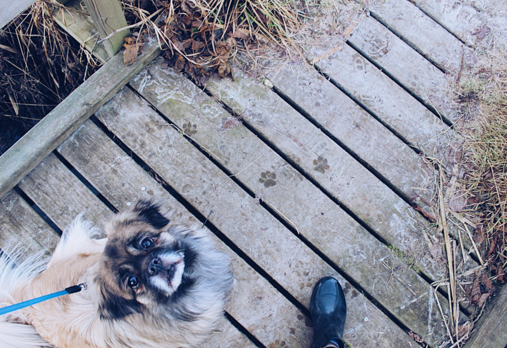

Our Services & Cost
Your dog shall receive the full-length time it deserves. Check for your local branch and pop in if you’re unsure which service is right for you. Every dog is unique, meaning that every dog deserves our full attention 7 days a week.
- Dog Walking: £12 Per Hour
- Our dog walking service lasts 1 hour, however you can enquire for more if you wish. Your dog will be collected from your home and taken to a local park for a walk with their pals. Exercise, mental stimulation, socialisation and play make for a happier, calmer and more contented dog. With a maximum of 4 dogs per walk you can be sure that your best friend is getting all the attention they deserve. Not all dogs enjoy group walks, therefore we provide two different services. Solo or group, discover which option is best for your dog. We also accept drop-offs at your nearest local branch. You can find out where your nearest branch is on our contact page.
- 
- Home Visits: £15 Per Hour (£7.50 Per Hour for new customers!)
- Our home visits service lasts 1 hour, however you can enquire for more if you wish. Need your dog looking after while you’re not home? This service allows you to have peace of mind while we ensure that your dog has the attention and care it deserves.

- Day Care: £60 Per Day
- Our professional day care centers provide the most up to date and clean facilities which ensures that your dog is safe, protected and healthy. This will cover all services from feeding, bathing, walking, and sleeping.